Project 3: Flow Models
Part A: Exploring the Power of Flow Models
In Part A, I used a pretrained flow model to denoise, generate, and edit some images. I started by mixing noise with an image, then implemented Euler sampling and classifier-free guidance. I also combined velocity predictions to make visual anagrams and hybrid images.
1.1: Constructing Noisy Training Inputs
The noisy input is a mix of Gaussian noise ε and the original image x1, using xt = (1 − t)ε + t x1. At t = 0, the input is pure noise. At t = 1, it is the original image.
I sampled one noise tensor with seed 180 and reused it at t = 0.25, 0.50, and 0.75. This kept the noise pattern the same, so only the amount of the original image changed.
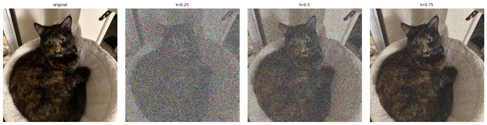
1.2: Classical Denoising
I first divided each noisy image by t to bring the image back to its original scale, then applied a Gaussian blur: x̂1 = Gσ(xt / t). Dividing by t also scales the noise by (1 − t) / t, so lower t makes denoising harder. More blur removes more noise, but also loses detail.
For each input, I tried σ = 1, 2, 4, 8, and 16 and kept the result with the lowest MSE compared to the original. I calculated the MSE before clipping the pixel values for display.
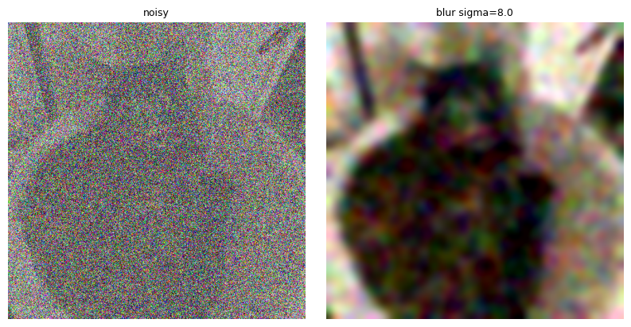
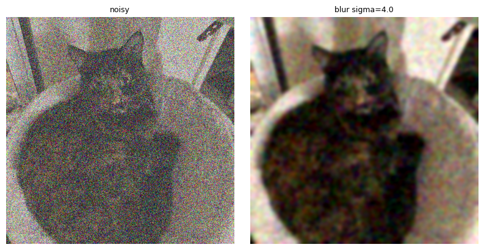
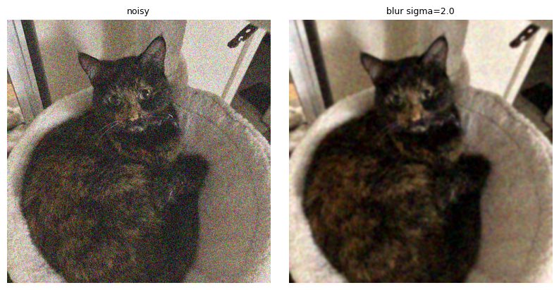
The best blur strengths were σ = 8, 4, and 2 at t = 0.25, 0.50, and 0.75. The strongest blur gets rid of much of the noise, but also blurs Miya’s fur and face. At t = 0.75, less blur is needed, so more of her fur pattern comes through.
1.3: One-Step Denoising
I used the model’s velocity prediction to estimate the image at t = 1 in one step, x̂1 = xt + (1 − t)vθ(xt, t, c), with the prompt “a high quality photo.”
This assumes the predicted velocity is still useful for the rest of the path. I used the same noisy inputs from Section 1.1 for all three comparisons.
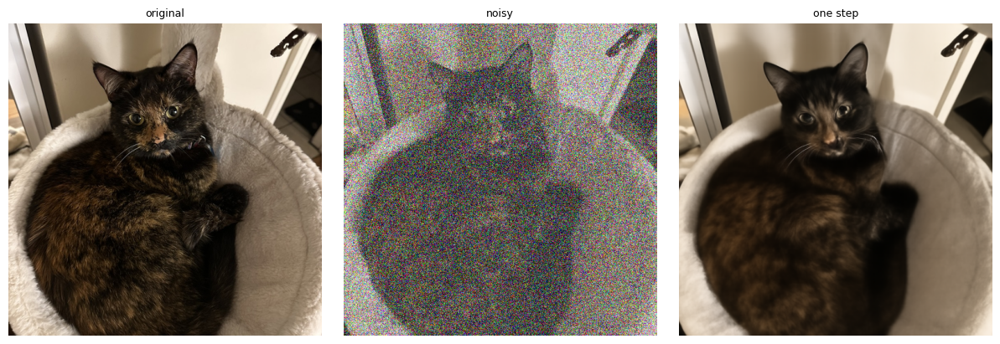
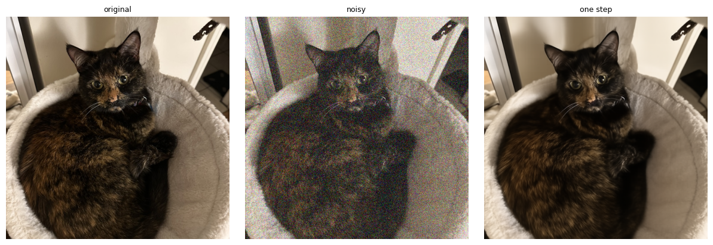
At t = 0.25, I can still make out a cat, but the fur is smoother and loses some of the tortoiseshell pattern. At t = 0.50 and 0.75, more of the original face and fur markings remain. The model brings back much more detail than Gaussian blur.
1.4: Visualizing Velocity
Because I knew both the original image and the sampled noise, I could calculate the exact path velocity x1 − ε. I compared the predicted update, Δpred = (1 − t)vθ, with the update that would recover the original image, Δgt = (1 − t)(x1 − ε) = x1 − xt.
I measured the error as the RMS difference between the updates across RGB, before any display scaling. The update panels use the same symmetric scale, with gray representing zero, and the error maps also share a scale. Brighter areas mean larger errors. Since there are no numeric colorbars, the maps are mainly useful for seeing where the errors are.
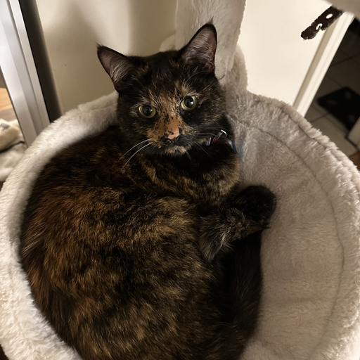
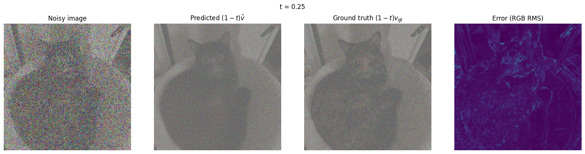
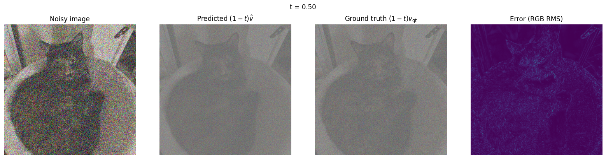
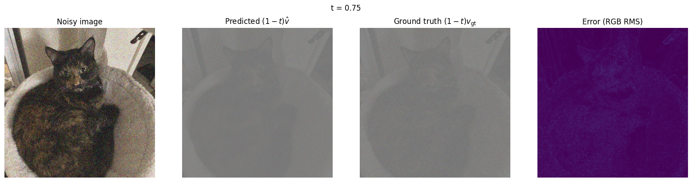
The predicted and target updates look fairly similar. The biggest differences are around Miya’s face and fur. The error map is brighter at t = 0.25 and gets darker as more of the original image remains.
1.5: Iterative Denoising with Euler Sampling
I started from the saved t = 0.50 input and took 25 Euler steps with h = 0.02. Each step follows xt+h = xt + h vθ(xt, t, c), calculating a new velocity at the updated image and time.
The sampler shortens the last step if needed to stop exactly at t = 1. I saved the starting image, every fifth step, and the final image. I then compared the result with Gaussian blur and one-step denoising, using the same input and generic prompt.
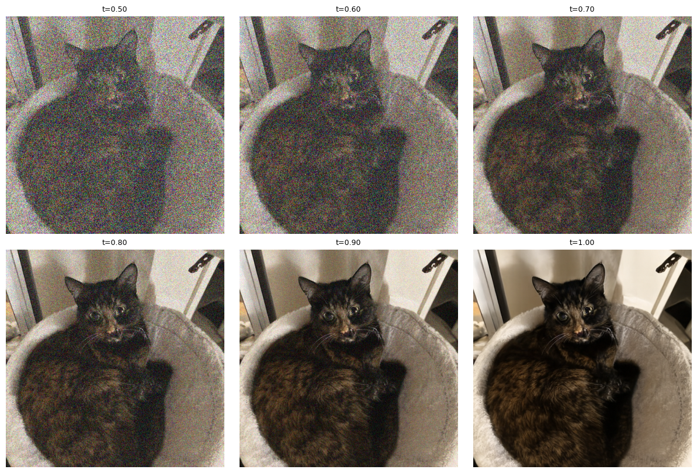
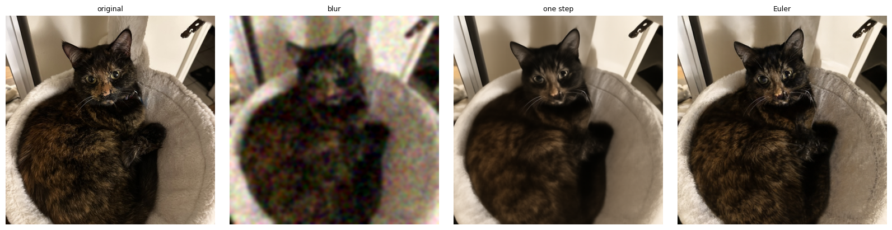
| Gaussian blur | 0.017824 |
|---|---|
| One-step denoising | 0.006916 |
| Euler denoising | 0.008604 |
Euler sampling gradually clears up the grain while keeping Miya recognizable. For this image, one-step denoising actually gets closest to the original: its MSE is 0.006916, compared with 0.008604 for Euler and 0.017824 for blur. More steps did not give a closer pixelwise match here.
1.6: Generating Images from Noise
Starting at t = 0 lets the same sampler generate an image from noise. I generated five images with the prompt “a high quality photo,” seeds 180–184, and 50 Euler steps per image.

All five images show people, with different poses, clothes, and styles. Even with such a general photo prompt, I mostly got portraits in this small batch.
2.1: Classifier-Free Guidance
I ran the model with the photo prompt and with an empty prompt at the same image and time. I then combined the predictions using vcfg = vc + w(vc − vu) with w = 7.
With this formula, w = 0 gives the ordinary conditional prediction. I reused seeds 180–184 from Section 1.6, so each comparison starts from the same noise. Guidance pushes the prediction further in the direction suggested by the prompt.

With CFG, the faces look clearer and the images are more consistent. The people and compositions change even though each seed starts from the same noise. The results look cleaner here, but the framing is also more similar across the five images.
3.1: Image-to-Image Editing
I mixed each input image with noise at a chosen starting time, then used CFG to continue to t = 1. I tried tstart ∈ {0.02, 0.04, 0.06, 0.10, 0.14, 0.25, 0.50}, keeping the noise the same across each image’s sweep. All edits used h = 0.02, w = 7, and the generic photo prompt.
Lower starting times leave less of the original image, so the model has more room to change it. Higher starting times keep more of the input. I tried this on the supplied Campanile image, my cat photo, and my castle photo.

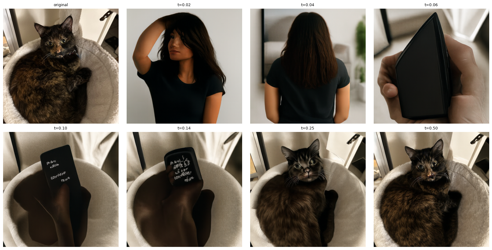
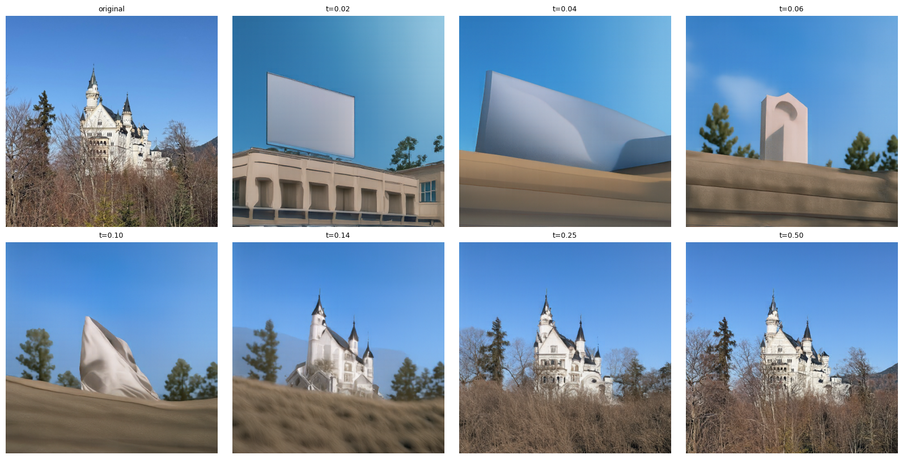
At the lowest starting times, the Campanile becomes a simple pillar or tower. Its clock and upper details come back around t = 0.25–0.50. Miya turns into a portrait or wallet at low t, while her pose and fur return at t = 0.25–0.50. The castle becomes billboards before its towers reappear around t = 0.14. All three keep more of their original structure at higher starting times.
Editing Hand-Drawn and Web Images
I also tried the same sweep on a web photo and two drawings to see how the photo prompt would handle them.
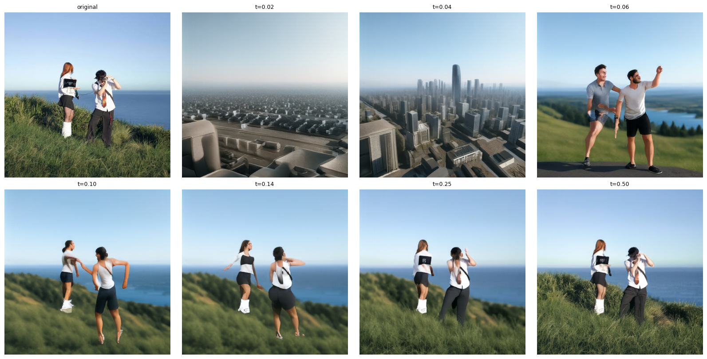
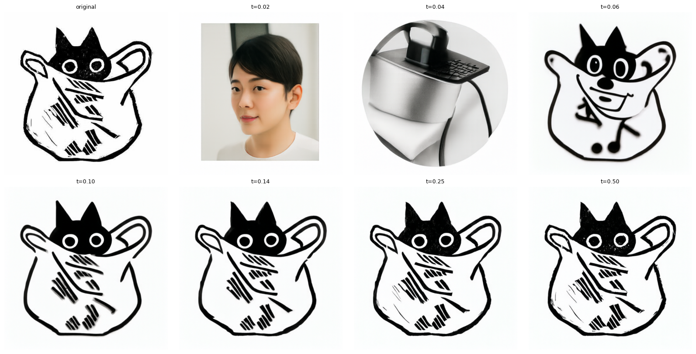
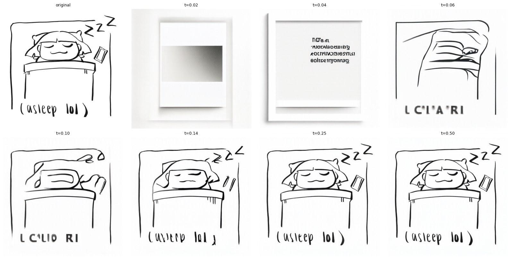
At the lowest starting times, the web photo turns into city scenes and loses the people entirely. The grassy hill and two figures come back around t = 0.10–0.14. The cat drawing becomes a portrait or metallic object at t = 0.02–0.04, then quickly returns to line art. The sleeping person drawing first looks like a framed picture, then recovers the bed and sleeping figure. At higher t, the drawings mostly stay drawings, even with the photo prompt.
3.2: Text-Guided Image Editing
I used the Campanile and my two photos again, but changed the prompt to describe what I wanted to create. I kept the starting times, noise seeds, step size, and guidance weight the same as in Section 3.1.
The prompts are “A photograph of a rocket on a launch pad” for the Campanile, “A donut resting on a plate” for the cat photo, and “A castle floating in the sky” for the castle photo.
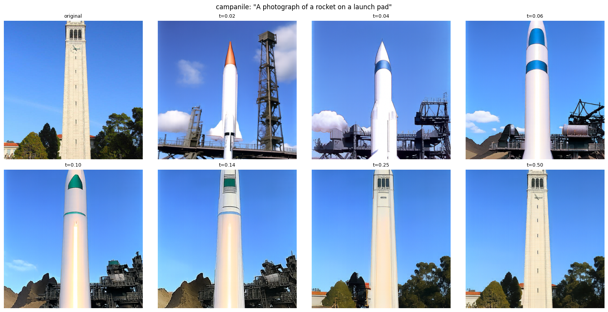
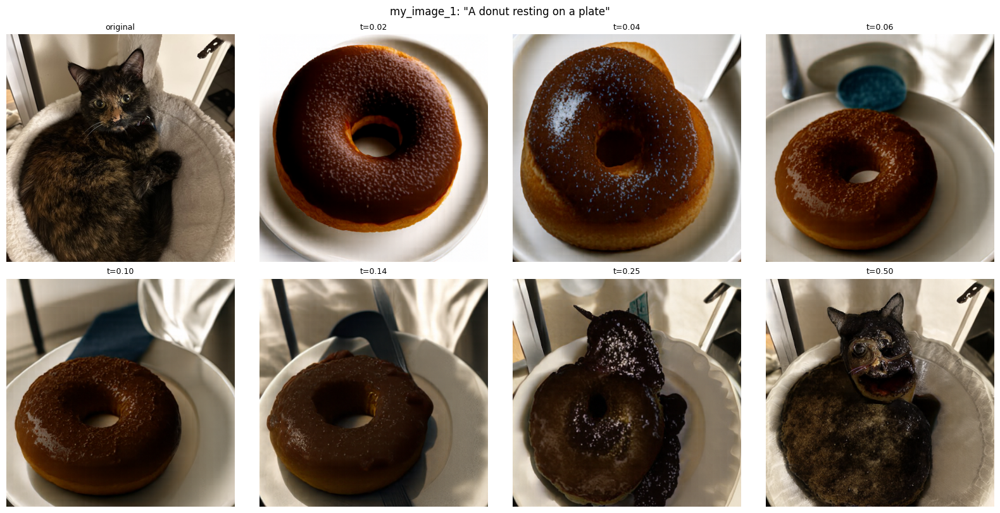
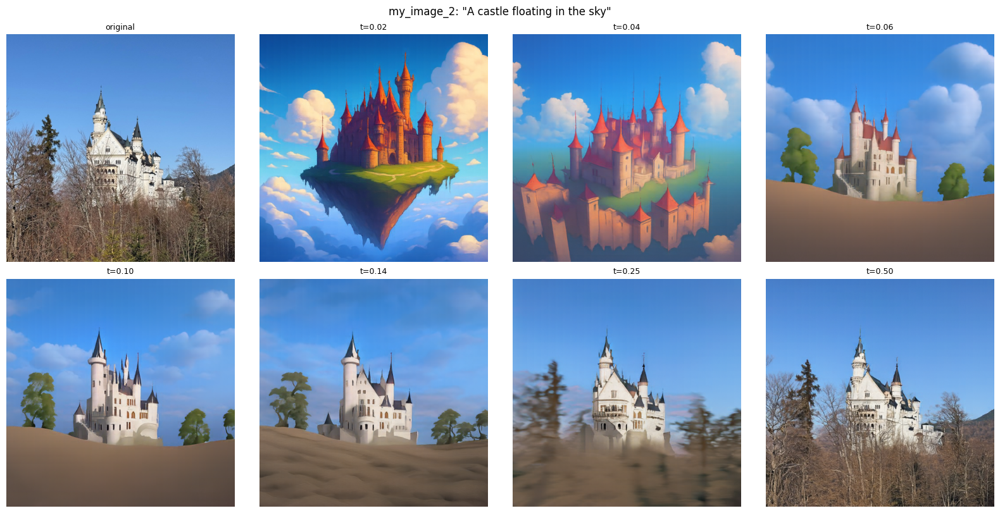
The rocket prompt gives rockets at low starting times, then a mix of rocket and tower shapes in the middle. At t = 0.50, the Campanile mostly returns. The donut prompt replaces Miya at low and middle times; at t = 0.25, the result mixes the donut and cat, and at t = 0.50, Miya is mostly back. The floating castle prompt gives colorful floating islands at t = 0.02–0.04, while higher starting times keep the original castle’s layout.
3.3: Visual Anagrams
At each Euler step, I predicted a guided velocity with the first prompt in the upright view. I then rotated the image by 180°, predicted with the second prompt, rotated that prediction back, and averaged the two: v = ½[vcfg(x, t, ca) + R(vcfg(R(x), t, cb))].
R flips both spatial axes while leaving the RGB and batch axes alone. I tried two prompt pairs: an old man / people around a campfire, and a snowy mountain village / a horse. Both views are shown below.


The first image looks like an old man upright and people around a bright campfire when rotated 180°. The second is less clear: I can make out a faint snowy village upright, but the horse is easier to see in the rotated view.
3.4: Hybrid Images
I mixed the low frequencies from one guided velocity prediction with the high frequencies from another using v = Gσ(va) + vb − Gσ(vb). I calculated both predictions from the same image and time, then used the combined velocity for the Euler update.
I used a Gaussian with σ = 16 and a 265 × 265 kernel. Prompt A controls what should show up from far away, while prompt B controls the close-up detail. I tried skull / waterfall and cat / forest, showing each at full size and as a 64 × 64 distant view.


The waterfall and forest are clear up close. In the smaller view, the waterfall has a somewhat skull-like pattern, but it is hard to make out. The forest still looks like trees, and I can’t clearly see the intended cat. Overall, the hybrid effect was weak in both examples.
Part B: Flow Matching from Scratch
In Part B, I trained UNets on MNIST, first to denoise images and then to generate digits through several steps. The images are 28 × 28 grayscale tensors in [0, 1]. I trained only on the 60,000 training images and used the test set for visual checks.
B 1.1: Implementing the UNet
The UNet starts with a ConvBlock and two DownBlocks, taking the image size from 28 to 14 to 7. Average pooling shrinks the bottleneck to 1 × 1, and a transposed convolution brings it back to 7 × 7. Two UpBlocks return it to the original size, with skip connections at 7, 14, and 28 pixels.
Each Conv has a 3 × 3 convolution, batch normalization, and GELU. DownConv uses stride 2, while UpConv uses a 4 × 4 transposed convolution with stride 2. A ConvBlock is two Convs. The network ends with a 3 × 3 convolution that outputs one channel, without a sigmoid or clipping.
B 1.2: Training a Single-Step Denoiser
I added Gaussian noise to a clean digit using z = x + σε, with σ ∈ {0, 0.2, 0.4, 0.5, 0.6, 0.8, 1.0}. I kept the digit and noise pattern the same and only changed σ.
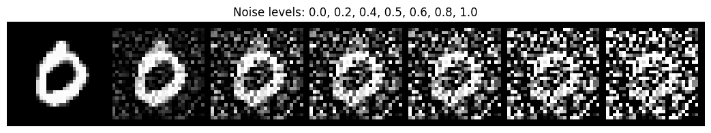
B 1.2.1: Training at σ = 0.5
I trained a D = 128 UNet for five epochs with shuffled batches of 256 and Adam at 10−4. Each batch got fresh noise. The loss measures how far the predicted image is from the clean target: L = E[‖Dθ(x + 0.5ε) − x‖²].
I plotted the training loss after every update. At epochs 1 and 5, I checked the same test digits with the same noise, showing the clean, noisy, and denoised images in separate rows.
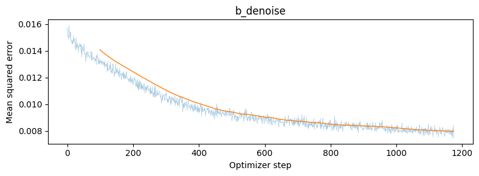
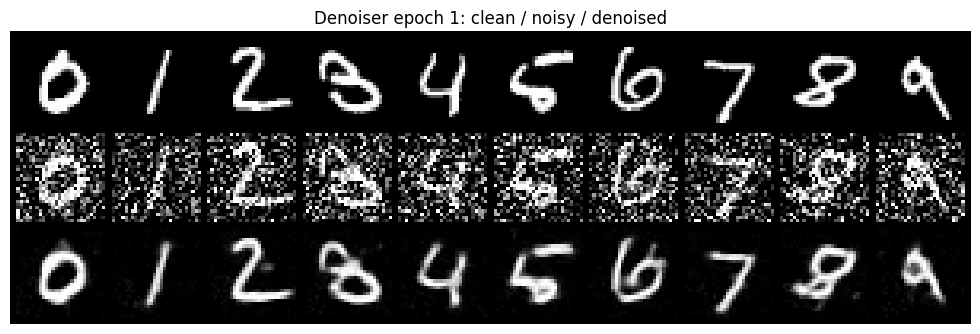
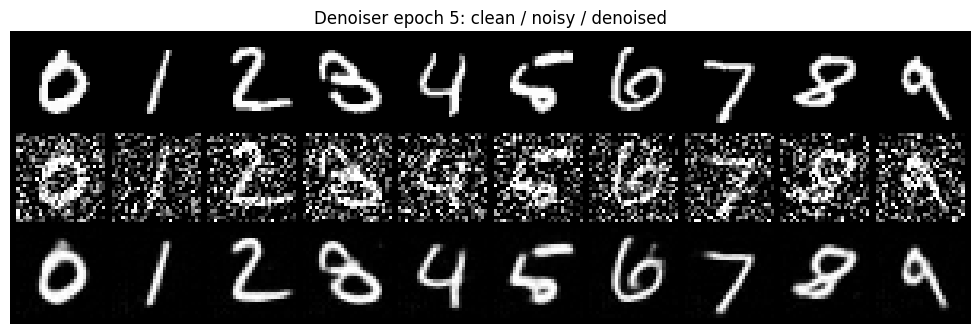
After one epoch, most of the background noise is already gone and the digits are recognizable. Some strokes are still soft or distorted, especially in the 5, 8, and 9. After five epochs, the edges are cleaner and the 8 and 9 look closer to their targets. The plotted training loss keeps dropping and ends at about 0.008 MSE.
B 1.2.2: Out-of-Distribution Testing
I then tested the trained model on the same digit with different noise levels. I kept the noise pattern fixed and varied σ over the same seven values. The model had only been trained at σ = 0.5 for five epochs. Each column shows the clean digit, noisy input, and denoised result.
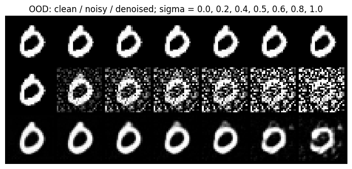
The result still looks like a 0 from σ = 0 through σ = 0.8, though the loop’s thickness and shape change. At σ = 1.0, some background noise remains and the result starts to look like a 9. With this much noise, the model fills in plausible strokes but can end up recovering the wrong digit.
B 1.2.3: Denoising Pure Noise
I trained a new D = 128 UNet for five epochs with the same batch size and optimizer, but gave it pure Gaussian noise as input. The noise was independent of the clean target. Below are the outputs for 40 fixed noise inputs after epochs 1 and 5, along with the training loss and average training digit.
The noise doesn’t tell the model which digit it should predict. Because the noise and target are independent, E[X | ε] = E[X], so the best prediction under MSE is the average training image.
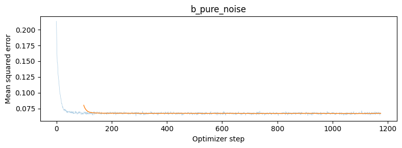
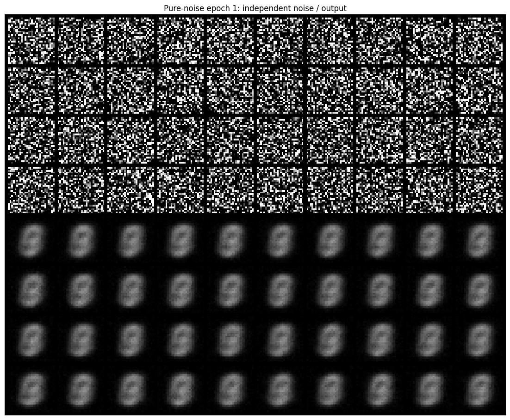
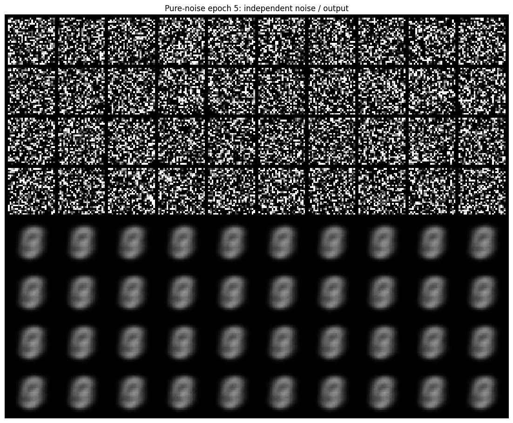
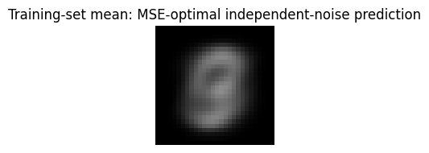
Changing the input noise barely changes the output. Both checkpoints give blurry oval shapes with overlapping strokes, much like the average training digit. By epoch 5, the outputs look even more alike. The plotted loss drops quickly and settles around 0.07. This fits the MSE explanation: predicting an average reduces error across unrelated targets, but doesn’t give separate examples of digits 0–9.
B 2.1–2.3: Time-Conditioned Flow Matching
For each training image, I picked a random time and mixed Gaussian noise x0 with the digit x1 using xt = (1 − t)x0 + tx1. The model learns to predict the velocity x1 − x0 by minimizing L = E[‖uθ(xt, t) − (x1 − x0)‖²].
To add time conditioning, I passed the scalar time through two FCBlocks with 2D and D output channels. Their outputs multiply the bottleneck and first upsampled features. Each FCBlock is Linear → GELU → Linear.
I trained for ten epochs with D = 64, batch size 64, and Adam starting at 10−2. I lowered the learning rate after each epoch using ExponentialLR with a factor of 0.11/10. For sampling, I started from Gaussian noise and took 50 Euler steps, reusing the same 40 initial noises at epochs 1, 5, and 10.
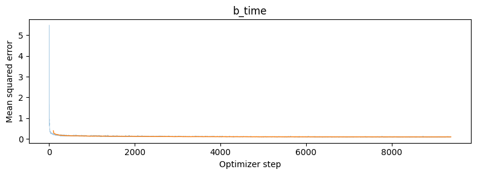
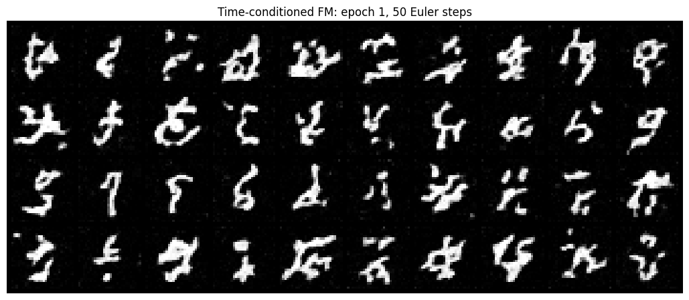
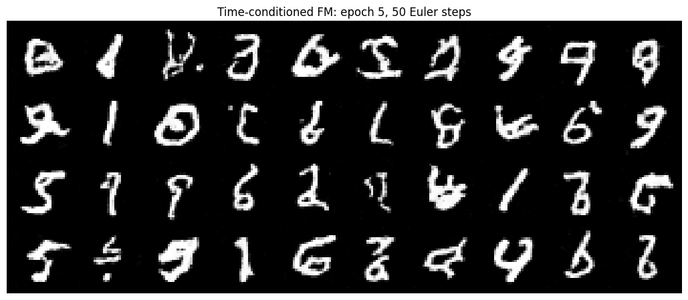
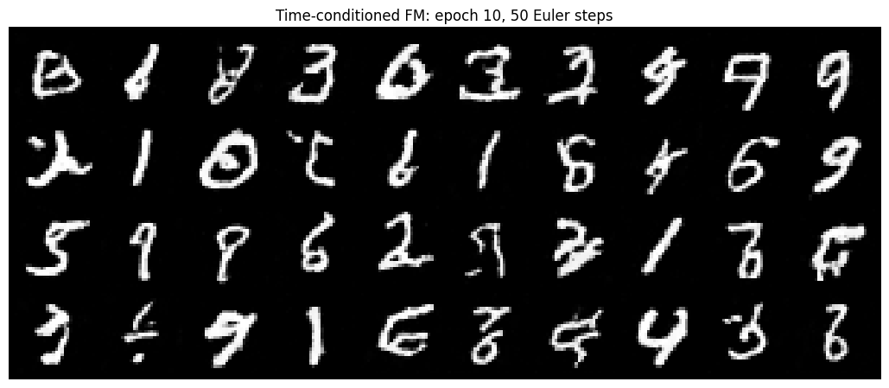
After epoch 1, many samples are broken strokes or shapes that only vaguely look like digits. By epoch 5, more of them have connected strokes and recognizable loops. Epoch 10 looks cleaner, though a few digits are still ambiguous. Different starting noises now give different digits, with variation in slant and stroke width. The training loss drops sharply at first, then improves more gradually.
B 2.4–2.6: Class-Conditioned Flow Matching
I added the digit label as a ten-dimensional one-hot vector and passed it through two more FCBlocks. I combined the class and time information at the two conditioning points using c1 · h + t1 and c2 · h + t2. During training, I randomly zeroed out the whole class vector with probability 0.1.
I kept D = 64, ten epochs, and the same batch size, optimizer, and learning-rate schedule as the time-only model. At each checkpoint, I generated four examples of every digit, with columns 0–9. For sampling, I used ucfg = uuncond + γ(ucond − uuncond) with γ = 5.
Both predictions use the same image and time. With Part B’s formula, γ = 1 gives ordinary conditional sampling. I used 300 Euler steps and kept the labels and starting noises fixed at epochs 1, 5, and 10.
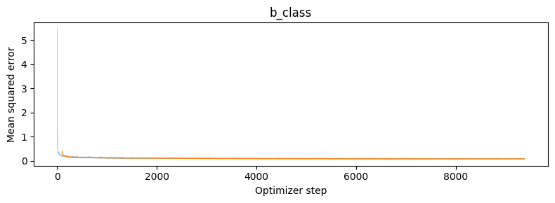
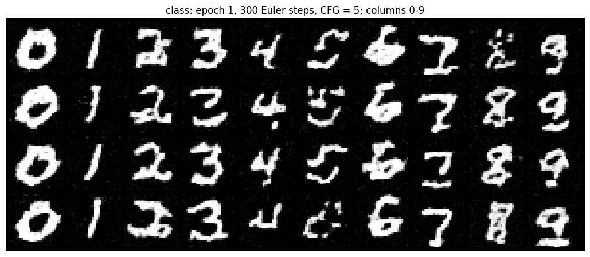
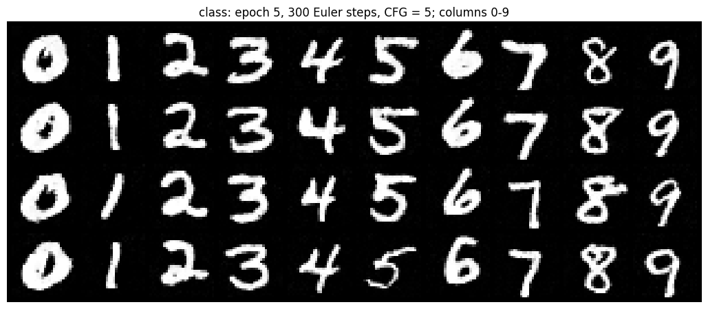
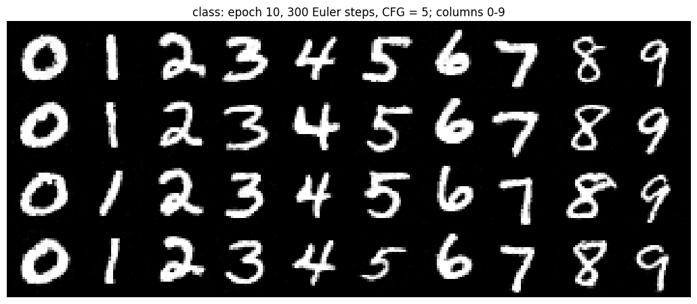
With class labels, the intended digits are recognizable even at epoch 1, though some strokes are thick, broken, or misshapen. By epochs 5 and 10, the columns clearly follow the requested digits from 0 to 9. The four rows still have different slants, loop shapes, and stroke thicknesses. These grids look cleaner than the time-only results, though they also use 300 guided steps instead of 50 unguided steps.
B 2.6: Removing the Learning-Rate Scheduler
I trained one more class-conditioned model from scratch without a scheduler, using Adam at a constant 3 × 10−3. I kept the architecture, epochs, batch size, class dropout, initial seed, and sampling noises the same so I could compare the two runs.
To make up for removing the scheduler, I lowered the constant learning rate to 0.003. This is about halfway between 0.01 and 0.001 on a log scale. It gives smaller updates early in training and larger updates near the end compared to the scheduled run. Both models use the same sampling seeds and labels.
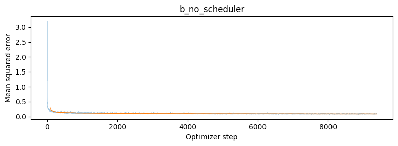
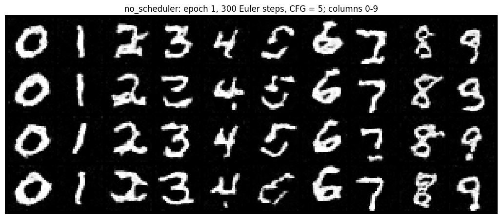
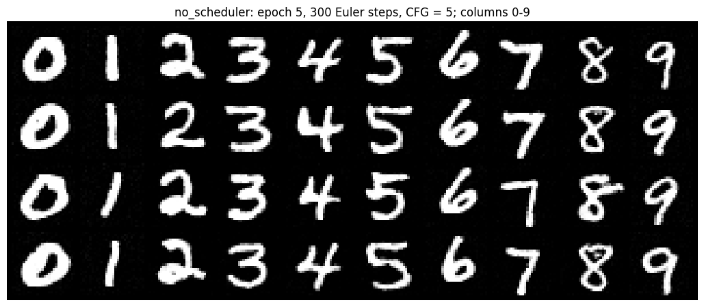
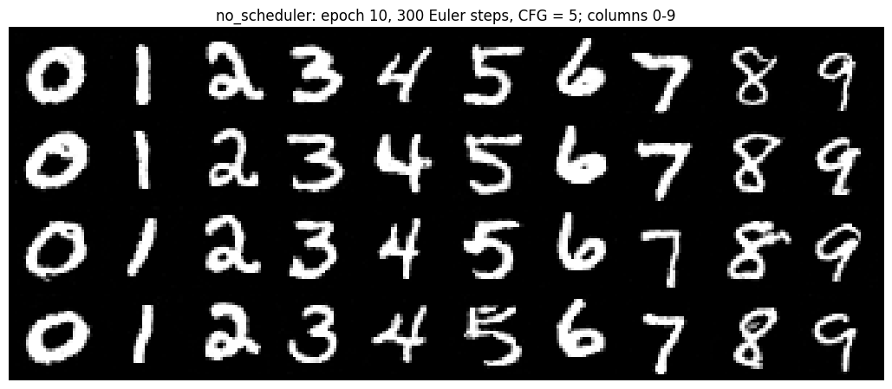
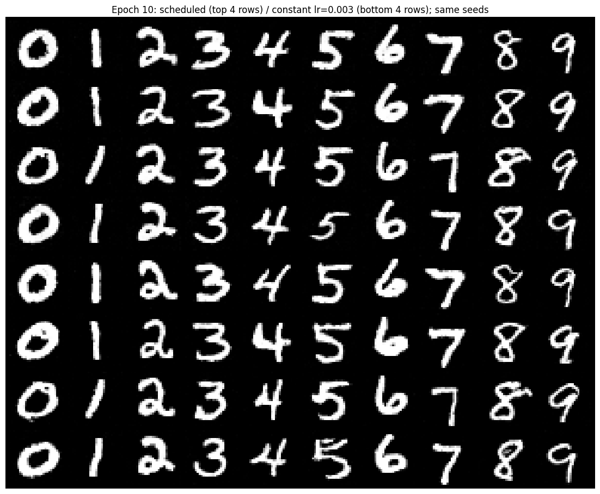
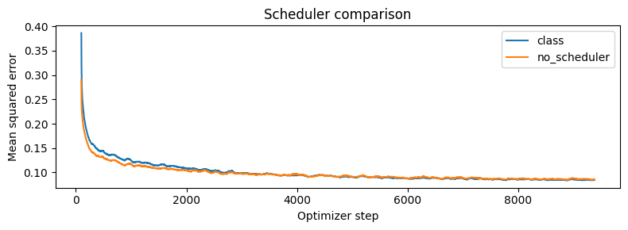
The constant-rate model still makes recognizable digits for every class. In these 40 samples, the epoch-10 results look about as good as the scheduled model, with some differences in stroke shape, especially for 2 and 6. Its smoothed loss is lower early on, then the curves get close, with the scheduled run ending slightly lower. A fixed rate of 0.003 was enough to keep the digits readable in this run.